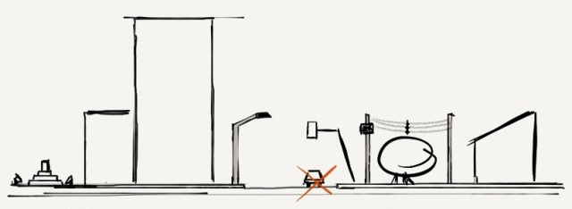
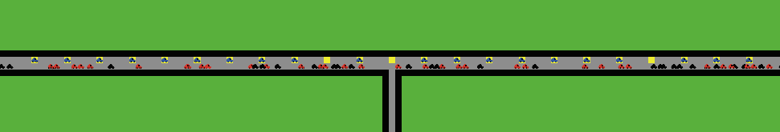

Mobilidade / Arquivo
Sobre vagas de rua e ciclovias (São Paulo) + NetLogo
Uma simulação explora como a oferta de vagas de rua e a circulação de veículos à procura de estacionamento afetam o trânsito.
Publicação original
Para fugir um pouco da temática eleitoral, retomo um debate que ocupou por algum tempo os editoriais e capas de jornais em São Paulo: a eliminação de vagas de rua, com implementação de ciclovias no lugar. A discussão foi envolvida por ânimos acirrados, editoriais contrários e nem sempre objetivos e com pouca informação relevante sobre o papel das ciclovias e das vagas de rua.


Minha visão é que antes de mais nada (uma ressalva quanto a linha editorial do blog: sou totalmente favorável a implementação de ciclovias), a discussão sobre substituição de vagas por ciclovias passa pela análise do papel do espaço público e quais são as diretrizes que se deve procurar seguir no seu gerenciamento. E ao fazer isso, é impossível não se deparar com o custo de oportunidade inerente à disponibilidade de uma vaga de rua com uso privado (vaga de rua não é um bem público por ser rival e potencialmente excludente); isto é, existe um tradeoff em disponibilizar vagas de rua de graça ou utilizar o espaço público para outro fim. É necessário reconhecer que status quo (vagas em quase todas as ruas) não está dissociado de um custo e de externalidades e que não existe nenhum direito adquirido que obrigue o Estado a fornercer vagas de rua em todas as ruas.
Essa breve digressão foi apenas para contextualizar a parte visual dessa publicação: a figura abaixo possui um link para um modelo que simula a eliminação de vagas de rua e seus impactos na dinâmica do trânsito.


São dois objetivos pretendidos com essa informação. O primeiro, apresentar o NetLogo. Trata-se de um ambiente de programação para modelagem de problemas multi-agente, em que os fenômenos que emergem da simulação são tratados como dependentes do estado inicial das variáveis e da interação dos agentes. O programa é relativamente fácil de trabalhar e conta tanto com bons tutoriais quanto com uma ampla gama de exemplos de aplicação, que percorrem as mais diversas áreas de conhecimento como simulação de epidemias, equilíbrios entre predadores e animais caçados na natureza, estado físico de materias, etc. A mais recente evolução do programa permite a publicação dos modelos em html utilizando javascript o que permite simular modelos/problemas, analisá-los e compartilhar na internet.
O segundo é justamente trazer para o debate sobre vagas de rua a complexidade que envolve a temática da mobilidade urbana. A partir do modelo, é possível visualizar o impacto positivo que a eliminação de vagas de rua tem no trânsito. E tal fenômeno encontra reflexo na teoria e evidência empírica de diversos autores que criticam os diversos custos de provisão de vagas de rua de graça, dentre os quais se destaca o aumento do trânsito pela circulação de veículos procurando vagas. Neste levantamento do Donald Shoup, um dos grandes nomes no campo de Planejamento Urbano, temos evidência de que em centros congestionados demora-se de 3,5 a 14 minutos para encontrar uma vaga e que de 8 a 74 por cento dos motoristas entrevistados estavam buscavam vagas. Mesmo que marginalmente, a eliminação da vaga de rua por si só teria um impacto positivo no trânsito de regiões mais congestionadas (e esse é o principal motivo de algumas grandes cidades proibírem estacionar na rua nessas regiões). E quase natural supor que quanto mais associada ao desenvolvimento de espaços alternativos para estacionar e à melhoria das alternativas de transporte (entre elas, a bicicleta) mais efetiva será essa política.
Enfim, me parece mais adequado entrar nesse debate de uma maneira honesta sobre os custos e benefícios de cada alternativa (que envolve trânsito, uso adequado do espaço público, saúde, etc.), exergando que o direito à acessibilidade é um direitos de todos e não de um veículo específico e reconhecendo que o tema é bastante complexo e que mesmo nas cidades em que é debatido há mais tempo ainda existe muita margem para ajustes e adequações. Se não é mais adequado, provavelmente será mais producente que focar em argumentos como “São Paulo tem muita subida” (várias cidades também tem, como São Francisco e Bogotá), “São Paulo chove muito” (Amsterdã também chove) ou”Não passou ninguém na ciclovia enquanto eu estava aqui” (quantas ruas ficam vazias sem carros por alguns períodos de tempo?). Certamente terá caráter mais público que focar em “Onde meus clientes vão estacionar o carro?”.
Como mencionado, o modelo foi desenvolvido no NetLogo; a imagem que ilustra o início do post foi criada por mim no Ipad usando o Paper. E como de costume, deixo um formulário abaixo para aqueles que quiserem mais informações sobre a análise acima.